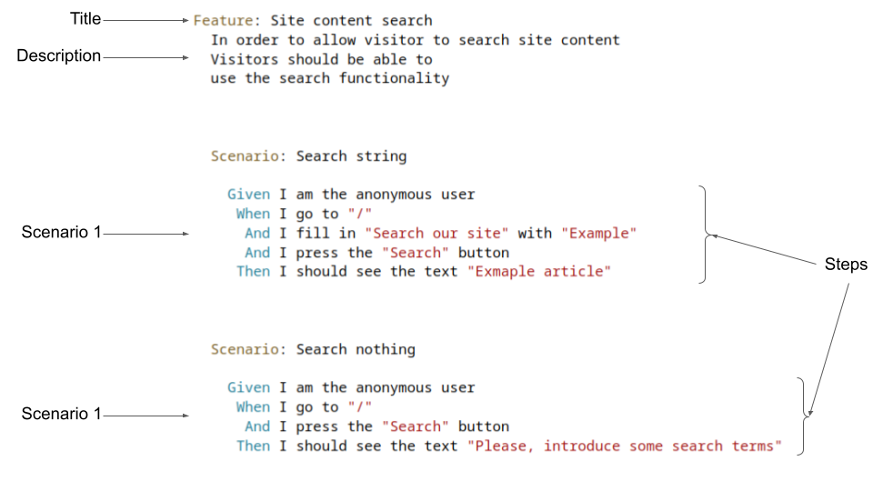

Potenciando la calidad en Drupal
Behat
Índice
Índice
- Requisitos del taller
- Introducción a Behat
- Parte práctica
Requisitos del taller
Requisitos del taller
- Git
- Composer
- Make
- Docker
- Docker compose (v1)
Montar entorno
-
Clonar repositorio
git clone git@github.com:rsanzante/drupalcampspain2023-behat-workshop.git -
Instalar paquetes
composer install -
Ejecutar asistente
composer boilerplate:assistant
Introducción a Behat
Introducción a Behat
- Framework BDD (Beahvior Driven Development)
- Describir un comportamiento que se testea automáticamente
- Lenguaje natural
- Test de aceptación
¿Qué significa «describir»?
- Historias de usuario
- Funcionalidad explicada desde el punto de vista de un usuario
- Escritas mediante el lenguaje Gherkin
Ejemplo de historia de usuario
Gherkin
- Lenguaje para escribir historias de usuario
-
Organizado en ficheros
.feature - Cada feature es una funcionalidad
- La funcionalidad se describe/prueba mediante escenarios
- Cada escenario se compone de pasos (steps)
- La primera palabra de un step (Given, Then, And, When) NO es relevante
¿Qué significa que «se testea automáticamente»?
- Cada step se mapea a acciones
- Acciones -> funciones en PHP
-
Drivers
- Goutte
- Selenium2
- Drupal API
- ...
Behat Extension
- Módulo Drupal que extiende Behat
-
Provee pasos específicos a Drupal
- Acceder como cierto usuario, rol, etc
- Creación de contenido, usuarios, etc
- Detección de mensajes
- ...
-
Provee características propias de Drupal
- Detección de regiones
- Detección de login
- ...
Behat Contexts
- Mecanismo estándar para extender Behat
- Uso típico: añadir nuevos pasos
-
Ejemplos
- Para mensajes Drupal
- Para Batch API
- Para depurar
- Para formualrios
- ...
Parte práctica
Parte práctica
- Configuración incial
- Nuevo proyecto
- Escribiendo tests de aceptación
Configuración inicial
Configuración inicial
- Behat puede ser complejo de poner en marcha
- Usaremos Metadrop Boilerplate
- Contenedor PHP + Apache + Selenium + Chrome + ...
- Preconfigurado para ejecutar Behat
Montar entorno
-
Clonar repositorio
git clone git@github.com:rsanzante/drupalcampspain2023-behat-workshop.git -
Instalar paquetes
composer install -
Ejecutar asistente
composer boilerplate:assistant
Control de contenedores
-
Levantar contenedores:
make up
-
Parar contenedores
make stop
-
Borrar contenedores
make prune
-
Shell en contenedor PHP
make shell
Comandos Behat
Dentro del contenedor de PHP (make shell
)
-
Ejecutar tests:
behat
-
Mostar pasos disponibles:
behat -dl
-
Ejcutar tests con una etiqueta dada:
behat --tag=foo
Nuevo proyecto
Nuevo proyecto
«Tenemos un proyecto de un sitio de recetas, donde los usuarios puedan ver las que hay disponbiles y puedan buscarlas. Habría que clasificarlas de alguna forma, con etiquetas o similar.
También debería tener otros contenidos relacionados con recetas,
que el departamento de SEO dice que es imprescindible, algo
como artículos o parecido. Habrá diferentes personas aportando recetas por lo que se quiere poder revisar lo que se publique antes de que lo vean los usuarios.
Ah, y que los contenidos muestren otros contenidos relacionados, que también es ncesario para el SEO.
¿Que dificultad prevéis
? También habría que tener listados
de recetas
y de artículos.
Importante la seguridad, claro,
que no podemos permitirnos un
defacement
, sería fatal para nuestra imagen.
Sobre todo que tenga un buen
diseño........
»
Paso a requisitos
- Sitio con dos contenidos: recetas y artículos
- Listados de recetas y artículos por fecha
- Buscador de recetas
- Flujo editorial
- Artículos relacionados en cada página de artículo
- Página de inicio con un poco de todo
- ...
Escribiendo tests de aceptación
Escribiendo tests de aceptación
-
Añadir fichero
.feature -
¿Dónde?
tests/functional/behat/features/umami/ - Describir historia de usuario usando escenarios con Gherkin
HdU 1: Ver listado de recetas
El usuario deber poder ver listado de recetas.
Pasos sugeridos:
Pasos sugeridos:
-
Given I am anonymous user -
Given I go to "<ruta>" -
And I click "<texto que clicar>" -
And I should see "<texto>"
fichero
recipe_list.feature
HdU 2: Acceder a la receta receta destacada de portada
El usuario deber ver la receta destacada en portada y acceder a ella desde la propia portada.
Pasos sugeridos:
Pasos sugeridos:
-
Given I am anonymous user -
Given I go to "<ruta>" -
And I click "<texto que clicar>" -
And I should see "<texto>"
fichero
featured_recipe.feature
HdU 3: Acceder a artículo de portada
El usuario deber ver un artículo en la portada y acceder a él desde la propia portada.
Pasos sugeridos:
Pasos sugeridos:
-
Given I am anonymous user -
Given I go to "<ruta>" -
And I click "<texto que clicar>" -
And I should see "<texto>"
fichero
home_page_article.feature
HdU 4: Acceder a un artículo
El usuario deber ver un artículo, incluyendo sus etiquetas, artículos relacionados y
breadcrumb
Pasos sugeridos:
Pasos sugeridos:
-
Given I am anonymous user -
Given I go to "<ruta>" -
And I should see "<texto>"
fichero
article_view.feature
Problemas de la HdU4:
- El texto exacto del breadcrumb no es obvio o ya aparece en la página
- ¿Cómo probar que el propio artículo no sale en artículos relacionados?
Definir regiones del theme
- Declarar regiones mediante selectores CSS
- Los steps pueden usarlas
Editar behat.yml y añadir dentro la propiedad
NuvoleWeb\Drupal\DrupalExtension
:
region_map:
pre header: ".region-pre-header"
highlighted: ".region-highlighted"
header: ".region-header"
breadcrumb: ".region-breadcrumbs"
content: ".region-content"
content bottom: ".region-content-bottom"
tabs: ".region-tabs"
sidebar: ".region-sidebar"
bottom: ".region-bottom"
footer: "region-footer"
HdU 4B: Acceder a un artículo
Mismo caso que la historia de usuario 4 pero usando regiones para los pasos
Pasos sugeridos:
Pasos sugeridos:
-
Given I am anonymous user -
Given I go to "<ruta>" -
And I should see "<texto>" -
And I should not see "<texto>"
fichero
article_view_improved.feature
Usando la API de Drupal
- Ciertos pasos requiren realizar cambios en el sitio
- Ejemplo: crear un usuario, crear entidades, ejecutar cron, etc.
-
Al añadir la etiqueta
@apia un escenario se activa el driver Drupal API. - Puede ejecutar código PHP en el contexto de Drupal bootstrapeado
HdU 5: Acceso a creación de receta
Solo los usuarios
Pasos sugeridos:
author
deben poder acceder al formulario de creación de recetas.
Pasos sugeridos:
-
Given I am logged in as a user with the <rol> role -
Given I go to "<ruta>" -
And I should see "<texto>" -
And I should not see "<texto>"
Se necesita añadir
@api
en el escenario
fichero
recipe_edit_form_access.feature
Problemas de la HdU5:
- Los tests son repetivos
- Solo cambian algunos parámetros
- ¿Cómo reutilizar tests?
Scenario Outline
- Tests repetitivos que solo cambian algunos parámetros
-
Solución: escenarios parametrizables con
Scenario Outline
Scenario Outline: An example
Given I enter the <value> value
Then I should see <value>
Examples:
| value |
| foo |
| bar |
HdU 5B: Acceso a creación de receta
Mismo caso que la historia de usuario 5 pero usando
Scenario Outline
fichero
recipe_edit_form_access_scenario_outline.feature
Usando un navegador completo
- Hasta ahora se usaban peticiones HTTP directas y se examinaba el resultado
-
Al añadir la etiqueta
@javascripta un escenario se usa un motor con Javascript (por ejemplo, Chrome a través de Selenium2) - Necesario por ejemplo para campos con CKEditor
HdU 6: Creación de una receta
Crear una receta usando el formulario de receta
Pasos sugeridos:
-
Then I fill in "<campo>" with "<valor>" -
And I select "<valor>" from "<select>" -
And I scroll to "<campo>" field -
And I fill in the rich text editor "Summary" with "This is a summary" -
And I assign the media with name "nombre" to "id de campo" field
Se necesita añadir
@api y @javascript
en el escenario
fichero
recipe_create.feature
Creando pasos propios
- Añadir pasos específicos para un proyecto
- Facilitar aciones repetitivas mediante un paso
- Mantener la legibilidad de los tests
FeatureContext
-
Añadir función con expresión en anotación que la asocia con un paso
/** * @When I do something with :argument */ public function iDoSomethingWith($argument) { // do something with $argument } - Interactuar con navegador con Mink
-
Ejecutar código Drupal si
@apiestá activa en el escenario - Cualquier acción ejecutable mediante PHP
HdU 7: Uso de un paso propio
Crear y usa un paso propio que lleve a la lista de recetas
Paso:
Paso:
When I go to the recipe list
-
Editar fichero
tests/functional/behat/bootstrap/FeatureContext.php - Añadir función con el paso propio
Código sugerido
-
$this->visitPath('<ruta>'); -
$session->getPage()->find('region', '<region>'); -
$region->findLink('<enlace>');
fichero
custom_step.feature
Referencias
Referencias
- Documentación oficial de Behat
- Behat Contexts de Nuvole
- Behat Contexts de Metadrop
- Drupal Boilerplate con Docker y Behat preconfigurado